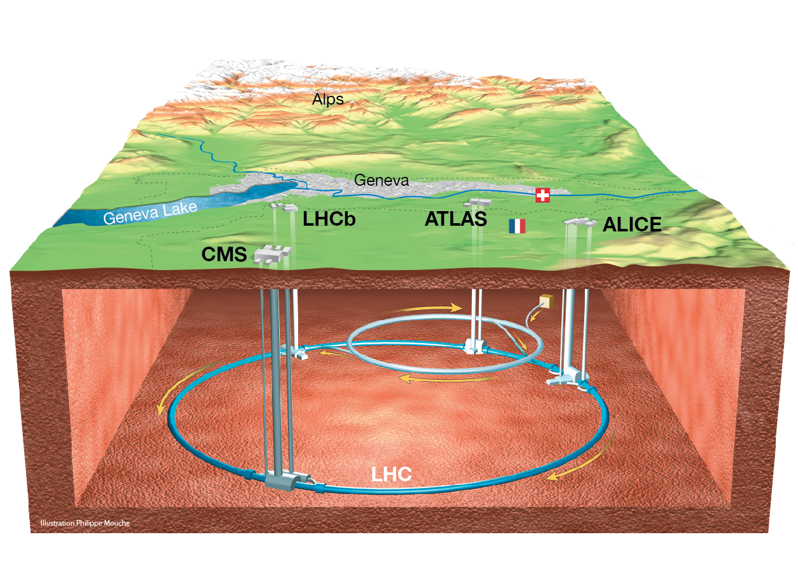
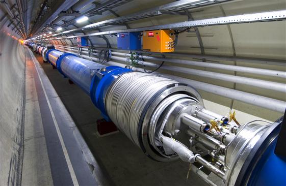
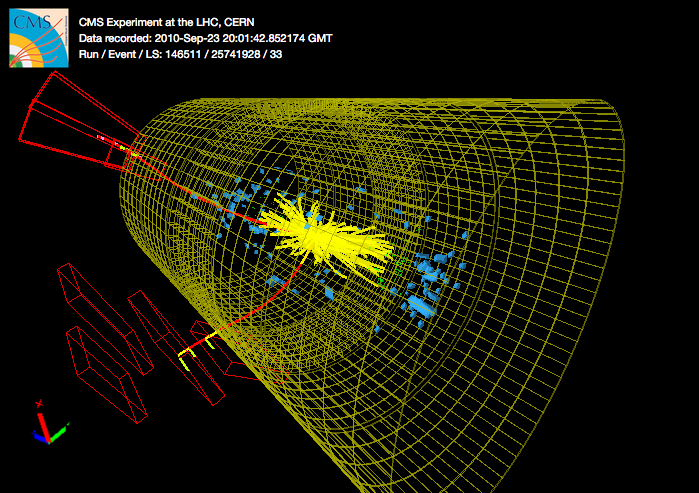
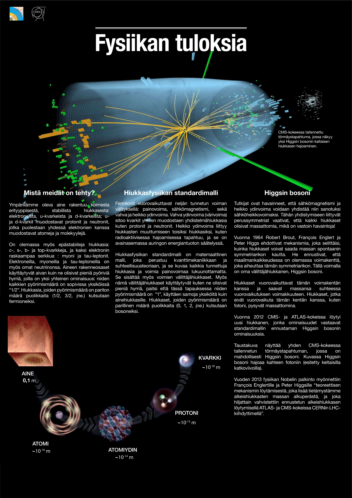
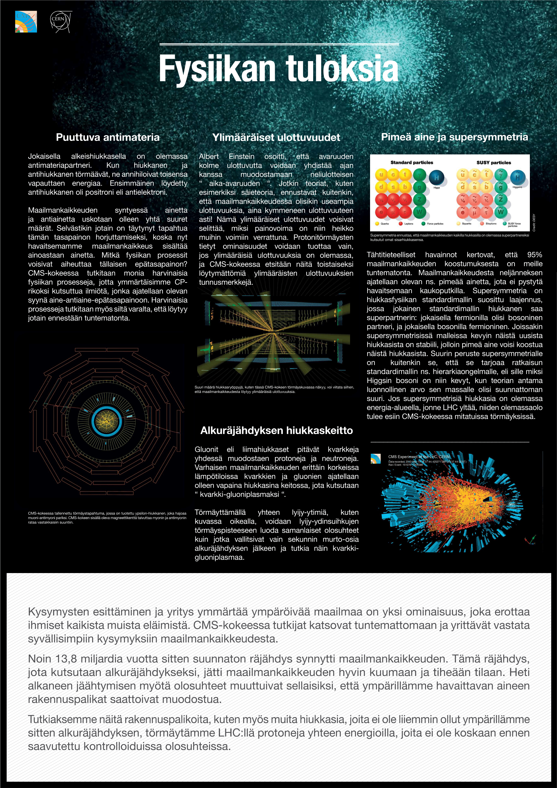

Mitä on hiukkasfysiikka?#
Hiukkasfysiikka on fysiikan ala, joka tutkii aineen rakennetta sekä vuorovaiktuksia. Kokeellinen hiukkasfysiikan tutkimus perustuu hiukkasten kiihdyttämiseen ja törmäyttämiseen toisiinsa tai johonkin kiinteään kohteeseen. Tämä voidaan toteuttaa hiukkaskiihdyttimillä. Törmäyksiä tutkitaan hiukkasilmaisimilla.
Maailman suurin hiukkaskiihdytin, Large Hadron Collider (LHC), sijaitsee CERN:ssä, Euroopan hiukkasfysiikan tutkimuskeskuksessa. LHC on 27 kilometriä pitkä ympyränmuotoinen synkrotronikiihdytin. Se sijaitsee tunnelissa noin 100 metrin syvyydessä Ranskan ja Sveitsin rajalla (kuva 1).
 Kuva 1: LHC ja sitä ympäröivät neljä tutkimusasemaa. [1]
Vuonna 2012 ATLAS ja CMS tutkimusryhmät CERN:ssä ilmoittivat löytäneensä uuden hiukkasen, jonka massa vastasi Higgsin bosonin ennustettua massaa. Higgsin hiukkanen ja sitä vastaava Higgsin kenttä selittävät muiden hiukkasten massan alkuperän. Peter Higgs ja François Englert, jotka ennustivat Higgsin bosonin teoreettisesti, saivat työstään fysiikan Nobelin vuonna 2013.
Katso CERN:n esittelyvideo alapuolelta.
from IPython.lib.display import YouTubeVideo
YouTubeVideo('i0qjDZH-p7E')
Lisää tietoa mm. CERN:ssä tehtävästä tutkimuksesta ja tutkimuksen tavoitteista löydät CERN:n kotisivuilta https://home.cern/.
Hiukkasten kiihdyttäminen#
LHC kiihdyttää pääasiassa protoneja, jotka ovat peräisin vetykaasupullosta. Protoneita tuotetaan poistamalla elektronit vetyatoomeista sähkökentän avulla.
Kiihdytysprosessi alkaa jo ennen LHC:tä. Ennen LHC:en saapumistaan protonit kiihdytetään ensin sähkö- ja magneettikenttien avulla muissa kiihdyttimissä. Näiden jälkeen protoneiden energia on 450 GeV. Protonit ohjataan nipuiksi kahteen eri protonisäteeseen. Jokaisessa säteessä on 2808 protoninippua ja jokaisessa nipussa $1\text{,}2\cdot 10^{11}$ protonia.
Protonisäteet ohjataan kahteen eri putkeen, joissa protonit kiertävät eri suuntiin. Esikiihdytyksen jälkeen protonit ohjataan suoraan LHC-kiihdyttimeen. Kuvassa 2 näkyy osa avattua LHC-kiihdytinputkea, jonka sisällä näkyvät protoniputket.
 Kuva 2: Avattu osa LHC-kiihdytinputkea. [2]
Hiukkasia törmäytetään, kun vastakkaisiin suuntiin kulkevat protonisäteet törmäävät. Kun kaksi protoninippua ohittavat toisiinsa, tapahtuu kuitenkin vain noin 20 törmäystä. Prononinippujen suuren nopeuden takia LHC:ssä niput ohittavat toisensa kuitenkin noin 40 miljoonaa kertaa sekunnissa. Tämä tarkoittaa 800 miljoonaa törmäystä sekunnissa.
Törmäyksen maksimienergia on 14 TeV. Käytännössä törmäyksen energia on kuitenkin pienempi, sillä protonien sijaan niiden sisällä olevat kvarkit ja gluonit törmäävät toisiinsa. Näin ollen kaikki protonien energia ei siirry törmäykseen.
Protonien törmätessä törmäysenergia voi muuttua massaksi ($E=mc^2$). On siis mahdollista, että törmäyksessä syntyy uusia hiukkasia. Törmäyksissä syntyneitä hiukkasia tutkimalla ja mittaamalla tutkijat pyrkivät ymmärtämään paremmin esimerkiksi pimeää ainetta, antimateriaa sekä aineen rakennetta. Törmäystä ja siinä syntyviä hiukkasia on visualisoitu kuvassa 3. Nämä hiukkaset on havaittu CMS-ilmaisimella.
 Kuva 3: Törmäyksen visualisointi [3].
Tässä oppimiskokonaisuudessa käytetään ja analysoidaan CMS-kokeen tuottamaa avointa dataa hiukkasten törmäyksistä. Katso CMS:n esittelyvideo osoitteesta alapuolelta
from IPython.lib.display import YouTubeVideo
YouTubeVideo('S99d9BQmGB0')
Lisätietoa CMS-koeasemasta ja sen rakenteesta löydät osoitteesta https://cms-docdb.cern.ch/cgi-bin/PublicDocDB/RetrieveFile?docid=12398&filename=SetOfPostersFN_HQ_small_16092014.pdf.
Hiukkasten tunnistaminen datasta#
LHC törmäyttää miltei valonnopeudella kulkevia protoneja. Tällaisissa törmäyksissä voi syntyä uusia hiukkasia, joista osa on vakaita ja osa epävakaita. Epävakaat hiukkaset hajoavat spontaanisti jälleen uusiksi hiukkasiksi. Koska epävakaat hiukkaset ovat olemassa vain hyvin lyhyen ajan, eivät hiukkasilmaisimet havaitse niitä. Jotta saisimme tietää, mitä hiukkasia törmäyksessä on syntynyt, meidän tulee tarkastella vakaiden hiukkasten ominaisuuksia. Hiukkasilmaisimien keräämä data kertoo meille syntyneiden hiukkasten energian ja liikemäärän. Näiden suureiden avulla voimme laskea, mikä oli hajonneen hiukkasen massa.
 Kuva 3: Higgsin bosonin hajoaminen neljäksi leptoniksi
Kuva 3: Higgsin bosonin hajoaminen neljäksi leptoniksi
Kun hiukkasen massa on selvillä, sitä voidaan verrata tunnettujen hiukkasten massaan ja näin selvittää, mikä hiukkanen oli kyseessä. Jos massa ei vastaa mitään tunnettua hiukkasta, voi kyseessä olla täysin uusi hiukkanen. Yksittäinen tapahtuma ei kuitenkaan todista vielä mitään, vaan meidän tulee analysoida valtava määrä törmäyksiä, jotta voimme varmuudella erottaa uuden hiukkasen satunnaisesta taustakohinasta.
Esimerkiksi alla olevaan kuvaan on valikoitu CMS-ilmaisimella havaituista törmäystapahtumista sellaiset, joissa on syntynyt kaksi myonia. Massa, joka on x-akselilla, on laskettu edellä mainitulla tavalla myonien energian ja liikemäärän perusteella. Vastaavasti y-akselilla on kyseistä massaa vastaavien tapahtumien lukumäärä. Mikäli myonit ovat peräisin samasta hiukkasesta, on tämä massa kyseisen hiukkasen massa. Kuvassa voidaan havaita selkeästi taustasta erottuvia piikkejä, jotka vastaavat tilannetta, missä myonit ovat peräisin tietystä hiukkasesta, esimerkiksi oikeanpuoleisimman piikin tapauksessa Z-bosonista.
 Kuva 4: Kahden myonin invariantti massa [4]
Kuva 4: Kahden myonin invariantti massa [4]
Hiukkasfysiikan tutkimus CERN:ssä#
Alla olevista postereista löydät lisätietoa CERN:ssä tehtävästä hiukkasfysiikan tutkimuksesta.


Lähteet#
[1] P. Mouche, Overall view of the LHC. Vue d’ensemble du LHC, 2014. Url: https://cds.cern.ch/record/1708847.
[2] M. Brice, View of an open LHC interconnection. Vue d’une interconnection ouverte, 2005. Url: https://cds.cern.ch/record/905940.
[3] CERN open data portal. Event Display. © CERN, 2014–2019. Url: http://opendata.cern.ch/visualise/events/CMS.
[4] HLT Dimuon Invariant Mass Distributions in 2017 and 2018 ( CMS DP-2018/055) Url: https://twiki.cern.ch/twiki/bin/view/CMSPublic/HLTDiMuon2017and2018.